Dark Souls iii: Konec epochy
Když na jaře roku 2016 vyšlo Dark Souls III, Hidetaka Miyazaki už dávno nebyl oním neznámým
kodérem. Z pozice prezidenta celého studia FromSoftware vedl vývoj titulu, který měl od samého začátku
jeden jasný cíl – epicky a definitivně uzavřít celou sérii. Hra byla vyvíjena souběžně se závěrečnými
fázemi Bloodborne, z něhož si vypůjčila upravený grafický engine. Výsledkem byl zdaleka
nejrychlejší, nejdynamičtější a vizuálně nejpůsobivější díl celé trilogie.
Z hlediska vývoje se Miyazaki rozhodl neopakovat experimentální (a komunitou ostře debatovanou)
hratelnost druhého dílu, a místo toho vytvořil přímý, spirituální i mechanický milostný dopis původnímu
Dark Souls 1. Soubojový systém byl masivně zrychlen; nepřátelé se pohybovali dravě, bossové
dostali komplexní vícestupňové (multi-phase) útoky, a hráči byli nuceni reagovat spíše agresivními úhyby
než schováváním se za těžké štíty. K tomu byla představena nová mechanika "Weapon Arts" (Bojová umění
zbraní), která každé zbrani dodala unikátní, speciální chvaty odebírající nově přidanou magickou energii
(Focus Points).
Reakce herního průmyslu byla absolutně extatická. Hra se stala nejrychleji prodávaným titulem v historii
vydavatelství Bandai Namco (přes 10 milionů kopií do roku 2020) a sbírala ocenění za hru roku. Byla
chválena pro dokonalý balanc zbraní, velkolepý soundtrack od Yuka Kitamury a nezapomenutelné souboje s
bossy. Někteří kritici hře sice vyčítali lineárnější level design (oproti bludišti prvního dílu) a
přílišné opírání se o "fan servis" (návrat starých lokací a postav), avšak z hlediska hratelnosti je
Dark Souls III dodnes považováno za mechanicky nejvyladěnější a nejčistší Soulsborne zážitek vůbec.
Lothric: Poslední vydechnutí světa
Zatímco první díl pojednával o strachu ze změny a druhý díl o nevyhnutelnosti cyklu, třetí díl řeší
vyčerpání. Ocitáme se v království Lothric, na samotném sklonku věků. První plamen byl během
uplynulých tisíciletí rozdmýchán už tolikrát, že na světě nezbývá téměř nic, co by ještě mohlo hořet.
Plamen je tak slabý, že už nedokáže ani spálit ty, kteří se do něj vrhnou. Prostor a čas zkolabovaly do
sebe. Zbytky dávno padlých království a ruin z minulých epoch byly magicky přitaženy k sobě a navršeny
na sebe jako zoufalá, nesourodá deka na samém kraji propasti.
Vy nehrajete za Vyvoleného Nemrtvého. Hrajete za Nepopelavého (Ashen One). Jste bytost, která se
kdysi v minulosti pokusila upálit v plameni, ale byla tak slabá a bezvýznamná, že neposloužila ani jako
palivo a shořela na prach. Jste doslova vyhozený odpad. Až nyní, když všichni velcí hrdinové a Páni
popela (Lords of Cinder) zbaběle odmítli plamen znovu zapálit, svět ze zoufalství oživil vás – bezcenný
popel – abyste ty obrovské bohy a krále donutili splnit jejich povinnost.
Atmosféra hry je naprosto unikátní svou truchlivou velkolepostí. Obloha už není modrá ani noční, slunce
vypadá jako krvácející černá díra svanoucí ze světa poslední zbytky barev. Oheň, na kterém série vždy
stála, je zde zobrazen ne jako spása, ale jako nemoc. Hráč na své cestě nezažívá pocit záchrany, ale
podílí se na eutanázii světa, který už dávno měl zemřít přirozenou smrtí. Vyprávění Dark Souls 3 je
grandiózním, smutným a nevyhnutelným funerbálním pochodem za kdysi slavnou epochou, uzavírající jednu
celou generaci herní historie.
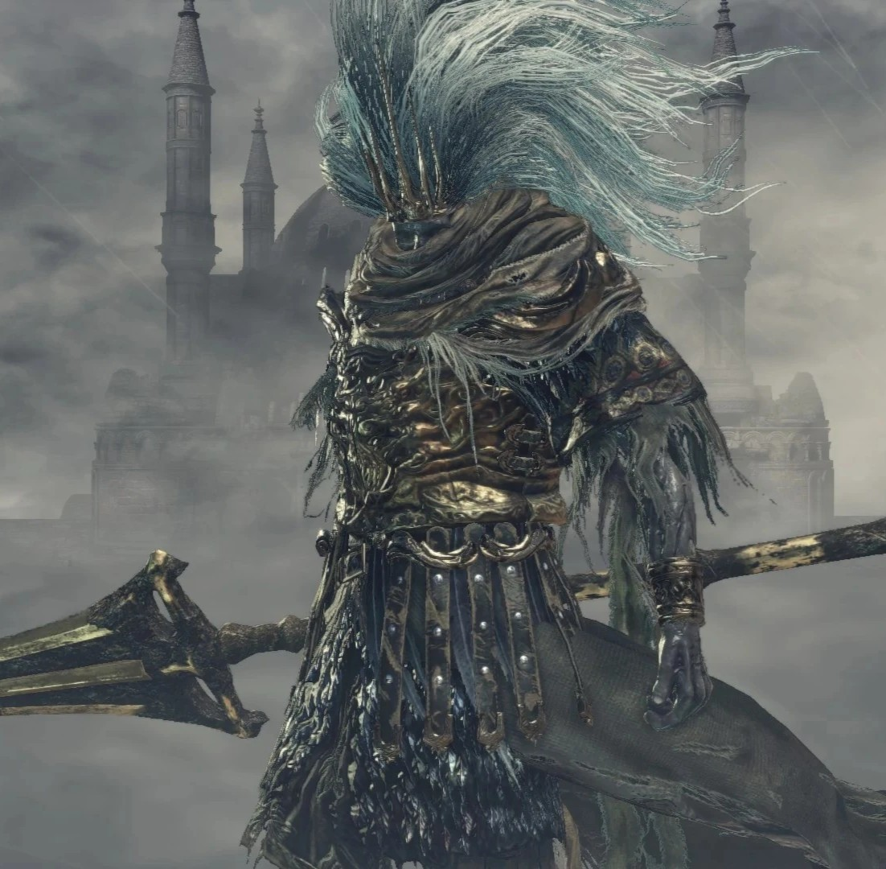
Bezejmenný Král
Klikni pro rozbor
Jedno z největších tajemství celé série odhaleno. Bezejmenný Král není nikdo jiný, než prvorozený
syn samotného Lorda Gwyna, Bůh Války, o kterém se mluvilo už v prvním díle. Během války s
Věčnými draky učinil nemyslitelné – uvědomil si hloupost celého konfliktu, spojil se s draky a
zradil svého otce.
Za tento čin mu Gwyn sebral božský status, zničil všechny jeho sochy, vymazal jeho jméno z análů
historie a vyhnal ho. Nyní Bezejmenný král sídlí vysoko v bouřkových oblacích nad Archdragon
Peak, kde se svým obřím ptačím drakem, Pánem Bouře (King of the Storm), tiše střeží odkaz
prastarých nepřátel. Jde o pravděpodobně nejtěžšího bosse základní hry, jehož bleskové útoky a
perfektní načasování vyžadují od hráče absolutní preciznost.
Kopí zabijáka draků (Dragonslayer Swordspear)
Zbraň kombinující drtivou váhu kopí a sečné schopnosti meče. Umožňuje seslat z
nebes masivní bleskový sloup, přesně jak to dělá Bezejmenný král. Je to
prapůvodní zbraň, od které Gwynův rytíř Ornstein (boss v DS1) převzal svůj
bojový styl.
Zbraň Boha války, prvorozeného syna Gwynova.
Tento bleskem protkaný meč-kopí zabil mnoho draků, avšak později byl jeho
majitelem užíván k ochraně stejných bytostí, které kdysi lovil.
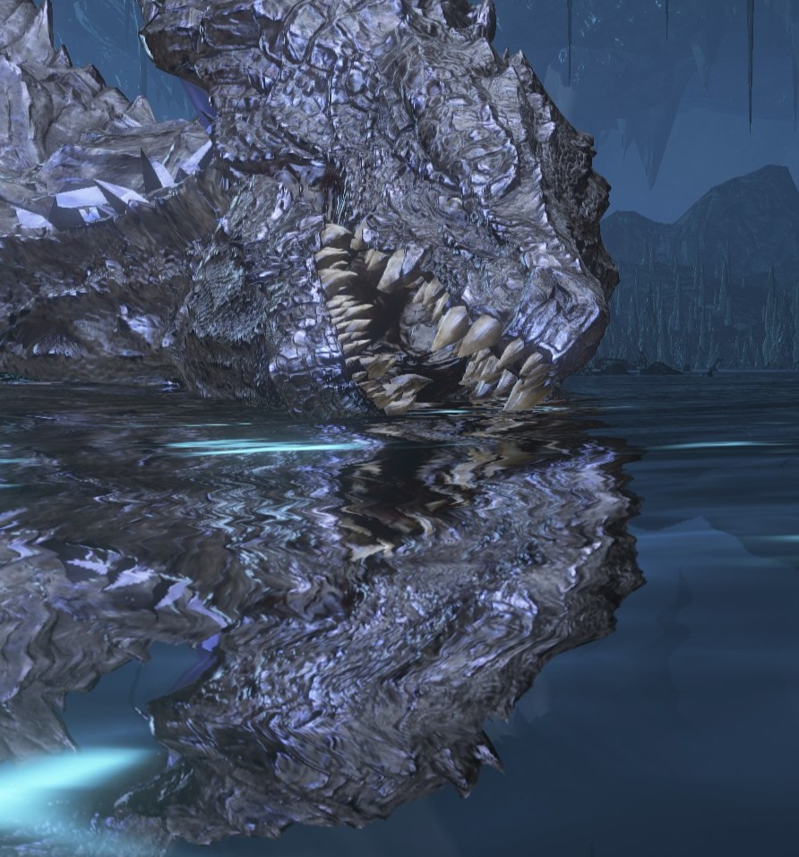
Midir, Pojídač Temnoty
Klikni pro rozbor
Přímý potomek Věčných draků. Když zničení Oolacile v prvním díle ukázalo hrůznou sílu Propasti,
bohové z Anor Londa (konkrétně Gwyndolin) uzavřeli s mladým drakem Midirem dohodu. Byl vychován
bohy a jeho úkolem bylo v Ringed City (městě pygmejů na okraji světa) doslova požírat
rozšiřující se Temnotu, aby se nedostala na povrch.
Midir tento úkol plnil celá tisíciletí. Propast ale nelze zničit. Masivní množství konzumované
lidskosti a temnoty začalo draka sžírat zevnitř. Obrovské fialové krystaly temnoty mu prorostly
kůží a on zešílel. Boj s ním (v DLC The Ringed City) představuje jeden z nejepičtějších a
nejzdravějších (co se týče HP) dračích soubojů v herní historii, kde drak chrlí jak oheň, tak
laserové paprsky čisté Propasti.
Roztřepená čepel (Frayed Blade)
Unikátní katana ukovaná z Midirovy temné duše. Čepel zbraně je neustále obalena a
trhána temnotou Propasti. Vydává útoky připomínající temné blesky a má
neuvěřitelně křehkou odolnost (durability).
Dračí zbraň ukovaná ze zkažené duše Midira.
Kdysi nádherná katana je nyní roztřepena a zčernalá na místě, kde se do ní
zakousla Temnota. Propast nezná slitování ani s božskými sliby.
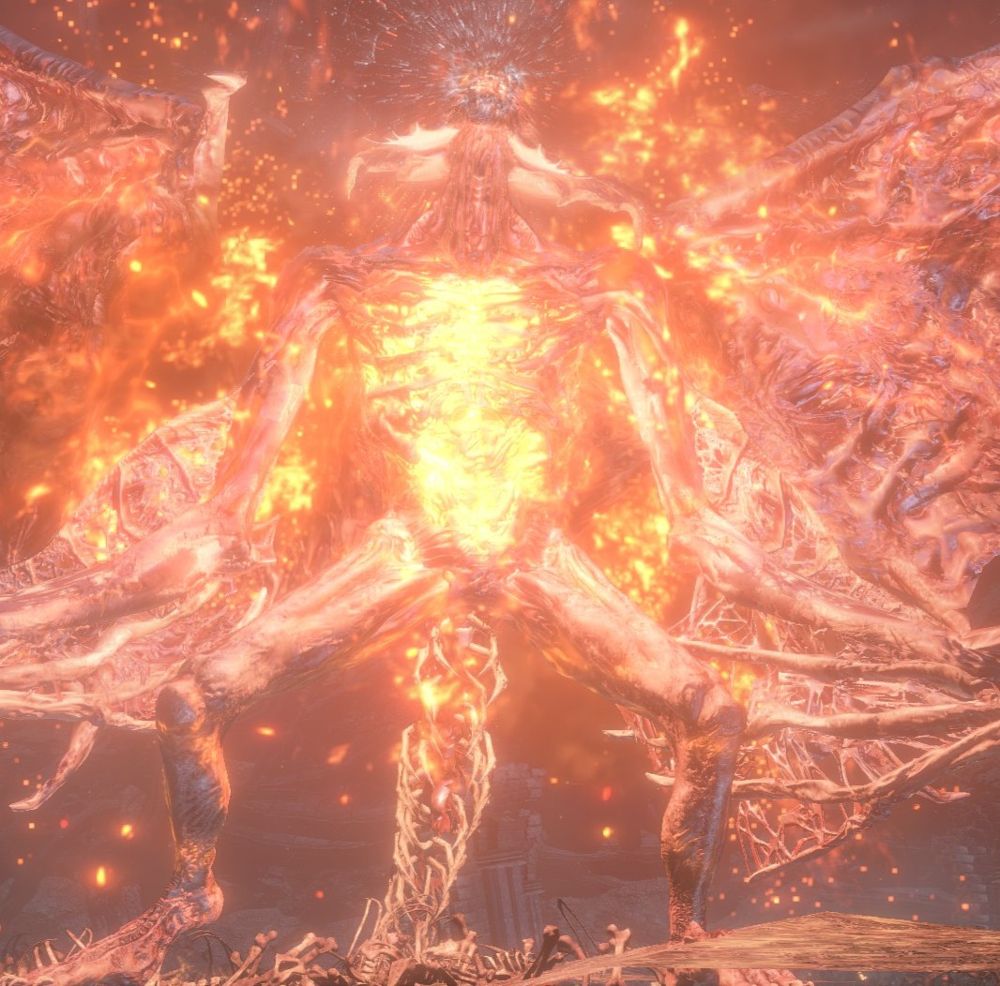
Princ Démonů
Klikni pro rozbor
Poslední vládce kdysi mocné démonské rasy. Démoni se zrodili, když se Čarodějnice Izalith z
prvního dílu pokusila replikovat První Plamen a stvořila Plamen Chaosu. Na konci světa v Dark
Souls 3 však i samotný Chaos vyhasíná a plameny chladnou na popel. Celá rasa démonů vyhynula.
Souboj se odehrává v ruinách slavné Svatyně Spojení Ohně (Firelink Shrine) z DS1, nyní pohřbené
pod horami popela. Hráč nejprve bojuje se dvěma posledními umírajícími démony (Demon in Pain a
Demon From Below). Když jeden z nich zemře, ten druhý v zoufalém pudu sebezáchovy absorbuje duši
Plamene Chaosu a zmutuje do gigantického okřídleného Prince Démonů. Jeho zabitím hráč
definitivně a navždy vyhladí celou démonskou rasu a uhasí Chaos.
Jizva démona (Demon's Scar)
Zbraň, která je pouhou energií a nemá fyzickou čepel. Zahrnuje v sobě jak funkci
rychlého zahnutého meče z ohně, tak i plnohodnotného nástroje k vyvolávání
pyromancií.
Tato chaotická hmota, formovaná ze samotné
jizvy Prince Démonů, svítí žhnoucím plamenem. Je to zbraň a pyromantický
plamen v jednom – hmatatelný, zoufalý zbytek rasy zrozené z Chaosu, jež nyní
nalezla svůj konec.
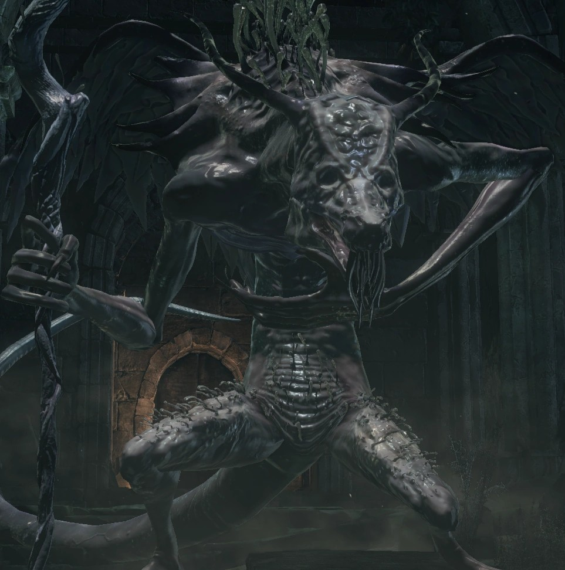
Posedlý Král Oceiros
Klikni pro rozbor
Původní král Lothricu, jehož touha po silném následníkovi trůnu ho přivedla k šílenství. Oceiros
objevil starobylé poznatky Bezšupinatého Seatha a archivy z prvního dílu. Věřil, že k záchraně
slábnoucí královské pokrevní linie musí provést genetickou fúzi s magií a s dračí krví.
Jeho experimenty způsobily, že zmutoval do vyhublé, částečně dračí obludnosti, ztratil zrak a
většinu rozumu. Boj s ním je jeden z nejvíce zneklidňujících v sérii. Oceiros si při souboji
neustále chová v ruce neviditelné, domnělé dračí dítě (Ocelotta) a šeptá mu. V polovině boje,
pohlcen vztekem a zvířecími instinkty, imaginární (nebo možná jen neviditelné) dítě rozmačká o
zem a začne bojovat na všech čtyřech jako zuřivá bestie.
Meč měsíčního svitu (Moonlight Greatsword)
Tato iterace legendárního meče je ukována z duše Oceirose, což dokazuje, jak moc
byl pohlcen učením Draka Seatha, v jehož magii nakonec našel svou zhoubu.
Zbraň objevující se v pověstech, spojená s
Bledým drakem. Oceiros pociťoval absolutní, nezvratnou oddanost k této
legendě, až sám začal hledat Měsíční svit. Ztratil při tom však svůj lidský
rozum i království.
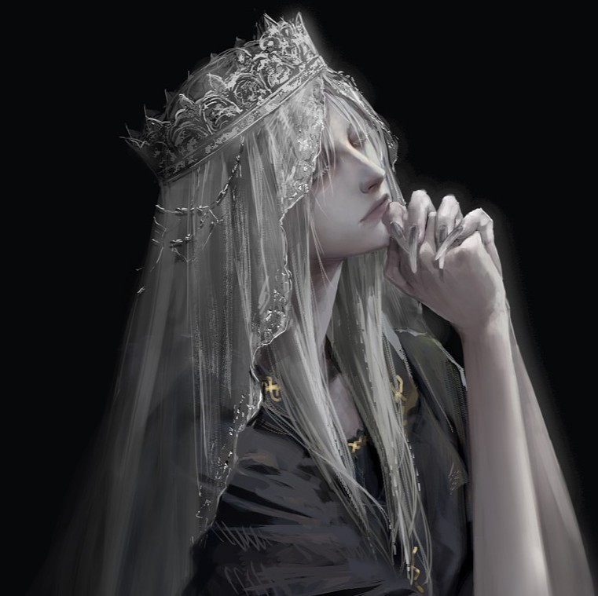
Princ Lothric
Klikni pro rozbor
Celý život byl připravován na jedinou roli: stát se Pánem Popela, obětovat se a prodloužit Věk
Ohně. Princ Lothric, mladší z bratrů, se však narodil fyzicky nemocný a slabý, pravděpodobně
kvůli zvráceným eugenickým experimentům svého otce Oceirose. Fyzicky ani nemůže chodit.
Pod vlivem tajemného učence došel k přesvědčení, že spojování Ohně je jen obrovský podvod starých
bohů, který svět neustále drží v agónii, místo aby ho nechal v klidu zemřít. Když přišel jeho
čas, Lothric odmítl na trůn usednout. Zamkl se ve své věži se svým starším bratrem Lorianem,
zradil tak svůj osud i království, a rozhodl se raději z bezpečí postele sledovat, jak celý svět
kolem něj vyhasíná. Cílem hráče je zabít ho a donést na trůn alespoň jeho popel.
Lothricův Svatý meč (Lothric's Holy Sword)
Elegantní, lehký platinový meč s ostřím vyzařujícím svaté světlo, původně určený
pro budoucího krále. Hráči však zjišťují, že tento meč Lothric nikdy ve
skutečnosti nepozvedl k boji.
Princův meč z platinové slitiny obdařený
silou z královských modliteb. Mladý Lothric měl tento meč nosit do boje a
zpečetit svůj osud hrdiny, ale raději jej nechal zapadnout prachem a
odvrátil se od svého údělu.
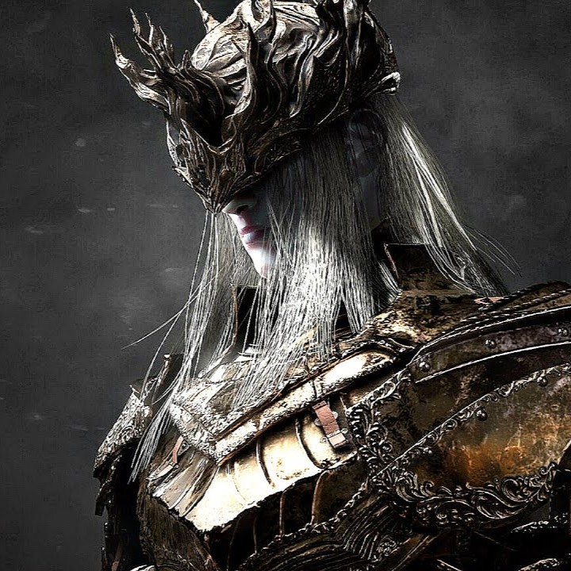
Princ Lorian
Klikni pro rozbor
Starší bratr Lothrica. Lorian se narodil zdravý a stal se slavným rytířem království. Sám dokonce
zabil Démonického prince. Kvůli obrovské sourozenecké lásce se však Lorian rozhodl sdílet kletbu
(nemoc) svého malého bratra dobrovolně.
Tímto aktem ztratil schopnost chodit a oněměl. Souboj s bratry je mistrovským dílem herního
designu. V první fázi bojujete jen s masivním Lorianem, který ačkoliv klečí a nemůže chodit,
teleportuje se po aréně a drtí vás obrovským hořícím mečem. Když Loriana zabijete, Lothric se
teleportuje na jeho záda, magií ho oživí a bojujete s oběma naráz. Lorian bezduše útočí jako
poslušný golem, zatímco Lothric mu ze zad sesílá podpůrnou a smrtící magii, ukázka naprosté,
tragické závislosti.
Meč Dvou princů (Twin Princes' Greatsword)
Tajná zbraň, kterou lze získat u kováře pouze tím, že spojíte Lorianův masivní
ohnivý meč a Lothricův Svatý meč do jediné zbraně. Symbolizuje jejich
nerozlučné, i když prokleté spojenectví.
Meč ukutý fúzí dvou zbraní patřících
prokletým sourozencům. Zrodil se z jejich neodlučitelného spojení, avšak
toto bratrství přineslo jen zkázu jejich rodu a světu, na který odmítli
uvrhnout další světlo.
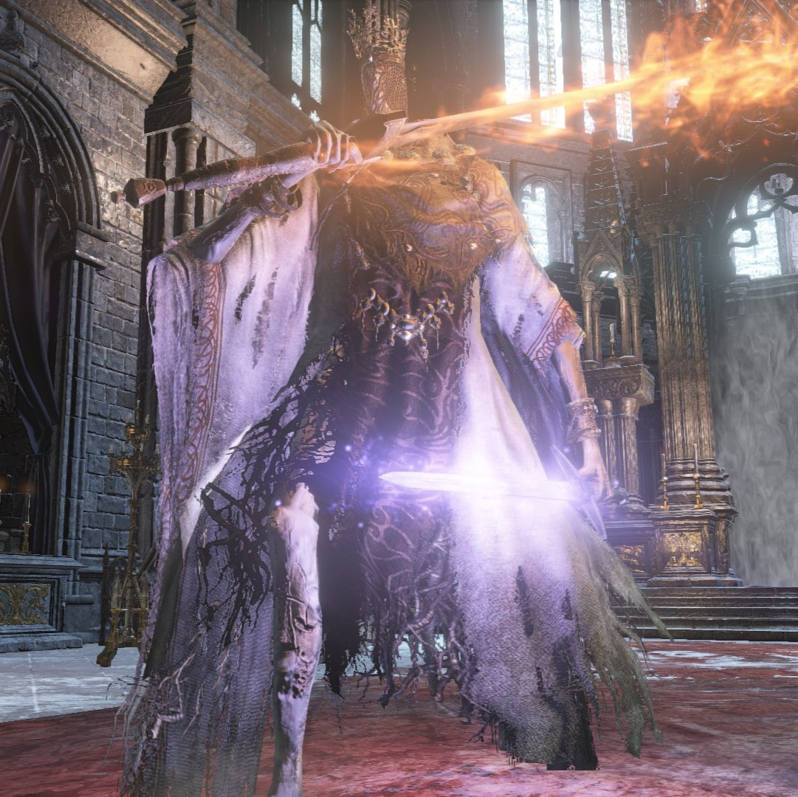
Pontiff Sulyvahn
Klikni pro rozbor
Sulyvahn je pravděpodobně hlavním zákulisním hybatelem všeho špatného, co se v Dark Souls 3 děje.
Narodil se v Malovaném světě, odkud uprchl. Zjistil, že bohové z Anor Londa (synové Gwyna)
slábnou a rozhodl se převzít nad světem moc.
Sám sebe prohlásil za "Papeže" (Pontiff) města Irithyll. Aby si udržel absolutní dominanci,
otrávil Gwyndolina (posledního starého boha) a předhodil ho pohlcovači bohů Aldrichovi, kterého
pak zamkl ve staré katedrále. Dále přesvědčil Prince Lothrica, aby nezapaloval Plamen, a své
vlastní rytíře obdaroval magickými prsteny, které z nich udělaly poslušné a šílené zvířecí
mutanty (Outrider Knights, Vordt). Sulyvahn ztělesňuje nezkrotnou lidskou ambici manipulovat
druhými pro absolutní moc.
Velký meč soudu (Greatsword of Judgment)
Sulyvahn v souboji ovládá dva unikátní meče – jeden temně magický a druhý ohnivý.
Tento fialově zářící meč reprezentuje temnou měsíční magii ukradenou
Gwyndolinovi v Anor Londu.
Velký obřadní meč Pontiffa Sulyvahna,
vyzařující magickou sílu temného měsíce. Ačkoliv byla jeho temná síla mnohem
hlubší než u běžné magie, Sulyvahn ji využíval právě proto, že rezonovala s
hloubkou jeho vlastní ctižádosti.
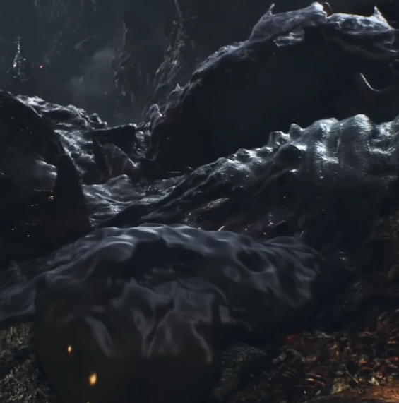
Aldrich, Svatý Hlubin
Klikni pro rozbor
Bývalý klerik, který nalezl potěšení v pojídání lidského masa. Pohlcoval tolik lidí, že jeho
vlastní tělo zkolabovalo do ohromné hromady černého hnijícího kalu a kostí. Přestože byl
monstrem, jeho nashromážděná síla (z pozřených lidí) byla tak obrovská, že ho svět vybral, aby
se obětoval a stal se Pánem popela, což také v minulosti učinil.
Když byl však oživen, aby Ohniště zapálil podruhé, Aldrich to odmítl. Místo toho měl vizi, že
přichází "Věk hlubokého moře" (Age of the Deep Sea). Spojil se s Papežem Sulyvahnem a nechal se
zavřít do slavné katedrály v Anor Londu, kde dostal za úkol pomalu a bolestivě pohltit zaživa
Gwyndolina (Gwynova syna). Když vstoupíte do boss-arény, to co vidíte (lidská polovina těla), už
je jen bezvládná mrtvola Gwyndolina, ovládaná temným slizem Aldrichova skutečného těla plazícího
se pod ním.
Životlovná Kosa (Lifehunt Scythe)
Magické kouzlo (zázrak), při kterém hráč vyvolá dlouhou temnou kosu k útoku a
vyléčení svého HP. Nejde oAldrichovu vlastní magii; je to magie Priscilly
(postavy z DS1), kterou Aldrich získal tím, že snědl Gwyndolina, v jehož snech a
paměti byla Priscilla uložena.
Temný zázrak Aldricha, Požírače bohů.
Ukradený z umírající mysli pohlcovaného Gwyndolina. Aldrich zkonzumoval boha
zaživa a s ním i všechny vzpomínky na dávné časy, sny a lidi, které kdy onen
bůh miloval.
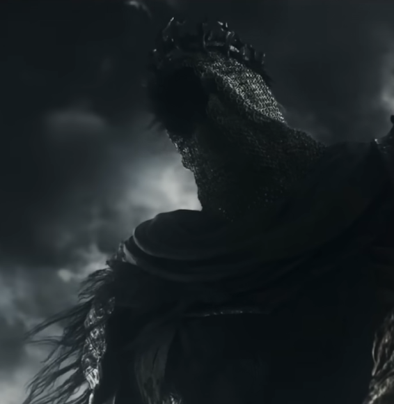
Obr Yhorm
Klikni pro rozbor
Yhorm the Giant byl osamělý král Profanovaného hlavního města (Profaned Capital), mocný obr
(příbuzný těm z DS2). I přes jeho nesmírnou sílu jím jeho vlastní lid hluboce opovrhoval kvůli
jeho původu. Yhorm si navzdory tomu zachoval čest a vládl spravedlivě. Aby svým poddaným dokázal
svou důvěru, předal jim zbraň jménem Vládce bouří (Storm Ruler) – jediný meč schopný ho
bez námahy srazit na kolena.
Když nezkrotitelný Profanovaný plamen začal pohlcovat jeho lid, Yhorm se v zoufalství obětoval
Prvnímu plameni, stal se Pánem Popela a pokusil se tak svůj lid zachránit. Oběť však selhala a
místo toho město shořelo. Zlomený a bez důvodu k životu, Yhorm se po oživení vrátil do trosek
svého trůnního sálu a odmítl se na obětování podílet podruhé. Hráč je ten, kdo za pomoci
legendárního meče a Yhormova dávného přítele, rytíře Siegwarda z Catariny, tohoto obra vysvobodí
z jeho trápení.
Vládce bouří (Storm Ruler)
Ikonická zbraň ze starých her od FromSoftware (objevila se už v Demon's
Souls). Hráč ji najde ležet přímo u Yhormova trůnu. Běžnými útoky
Yhormovi hráč neublíží téměř vůbec, ale nabití Vládce bouří vyvolá gigantické
větrné ostří, které obra srazí plynulým tahem k zemi.
Velký meč s rozbitou čepelí, který v sobě
skrývá sílu bouře. Yhorm the Giant rozdal dva takové meče – jeden těm, kteří
o něm pochybovali, a ten druhý svému nejdražšímu příteli, pro případ, že by
on sám někdy sešel z cesty.
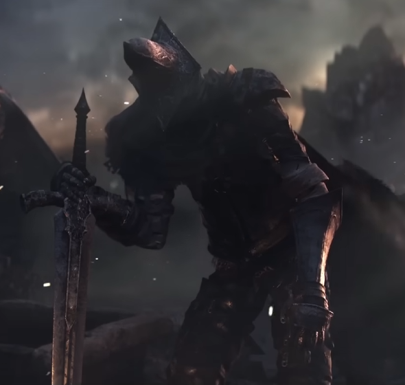
Strážci Propasti (Abyss Watchers)
Klikni pro rozbor
Elitní bojová jednotka (známá jako Farronova nemrtvá legie), která přísahala vlkům a krvi. Jsou
to dědicové vůle slavného Artoriase z prvního dílu. Jejich jediným úkolem bylo vyhledávat
jakýkoliv náznak Propasti (Abyss) a zničit ho, klidně za cenu srovnání celých království se
zemí.
Aby byli dost silní, spojili své krve v jednu jedinou "vlčí krev" a jako jednotka se upálili coby
spojený Pán Popela. Po staletích byli znovu oživeni, avšak čekal je hrůzný osud. V jejich
nepřítomnosti Propast nakazila kořeny pod jejich pevností. Jediným způsobem, jak zastavit šíření
Propasti, bylo zastavit nakažené jedince, což ovšem znamenalo, že se nakazili všichni. Když
vstoupíte do jejich arény, vidíte Strážce Propasti, jak neustále zabíjejí sami sebe v nekonečném
kruhu zkázy a šílenství, oddaní svému slibu až za hrob.
Velký meč Farronu (Farron Greatsword)
Mistrovsky vymyšlená zbraň tvořená obrovským mečem a zkrácenou dýkou v druhé
ruce. Dýka neslouží k útoku, ale používá se jako "kolík" zapíchnutý do země,
kolem kterého Strážce používá momentum k neuvěřitelným točitým útokům těsně při
zemi – styl podobný vlčímu lovu (a samotnému Artoriasovi).
Dýka spárovaná s těžkým mečem Farronovy
Nemrtvé legie. Rytíři bojovali nekonvenčním stylem připomínajícím zuřivého
vlka. Legie svěřila svou existenci krvi a nakonec byla právě vlastní
zkaženou krví i zničena.
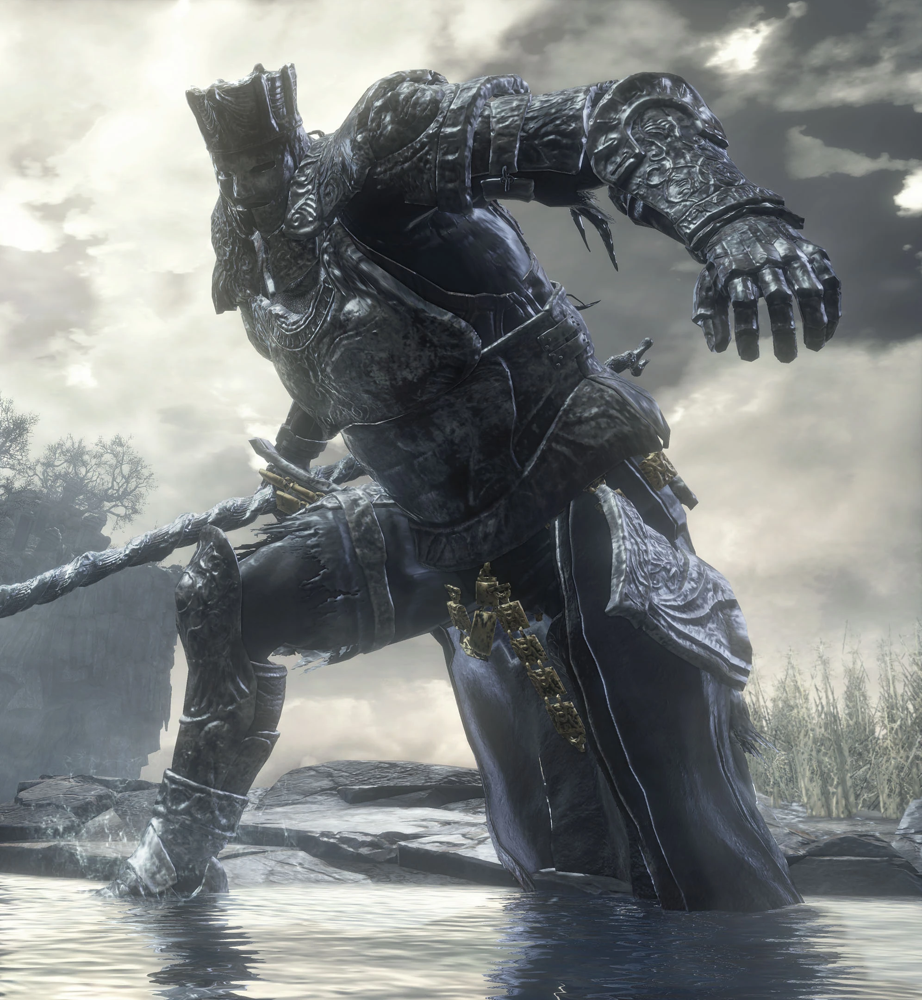
Iudex Gundyr
Klikni pro rozbor
Samotný první boss (tutoriál) Dark Souls 3, známý tím, že od prvních minut nevybíravě zkouší
odolnost nových hráčů. Gundyr však není obyčejné monstrum. Kdysi to byl šampion – bytost
naprosto stejná jako vy. Probouzel se z popela s úkolem propojit Plamen.
Bohužel se však probudil příliš pozdě. Když dorazil do Svatyně Spojení Ohně, jeho ohniště
už bylo vyhaslé a jeho Fire Keeperka (Strážkyně ohně) mrtvá. Uvědomil si, že selhal dřív, než
jeho cesta vůbec začala. Rozhodl se tedy zůstat, nechat si zarazit stočený meč do hrudi a
sloužit jako soudce (Iudex) dalším Nepopelavým. Bude spát tak dlouho, dokud nepřijde někdo, kdo
mu meč z hrudi vytrhne a dokáže v boji, že je hoden zachránit to, co Gundyr už zachránit
nedokázal. Polovinu jeho těla přitom zmutovala nákaza pramenící z čiré lidskosti uspané Kletbou
(Pus of Man).
Gundyrova halapartna (Gundyr's Halberd)
Masivní litinová halapartna, která nikdy neuhne, nereaguje na odražení a má
neuvěřitelný plošný dosah. Výborná do PVP (hráč proti hráči) a reprezentující
nezlomnou vůli starého šampiona.
Halapartna odlitá z jediné masy kovu, určená
pro starověkého Šampiona Gundyra. Zdá se, že tato zbraň nikdy nezažila
porážku, i přesto, že její pán dorazil ke svému údělu příliš pozdě a nakonec
se obětoval stát se pochvou pro meč budoucích vítězů.
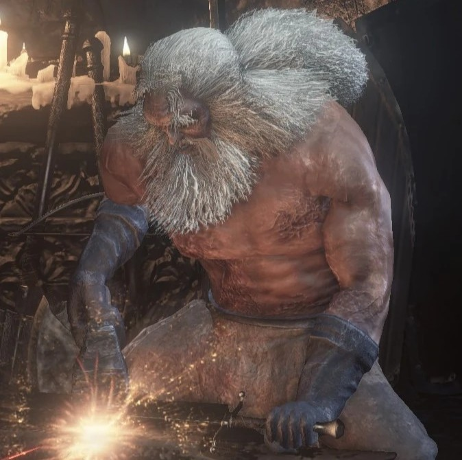
Kovář Andre (Andre of Astora)
Klikni pro rozbor
Jedno z nejdojemnějších setkání pro fanoušky prvního dílu. Když vstoupíte do Svatyně v DS3,
najdete tam známého zarostlého svalnatého dědu s kladivem v ruce, jak rytmicky buší do kovadliny
přesně jako před desítkami tisíc let v prvním Dark Souls.
Andre není bůh ani velký hrdina, je to obyčejný Nemrtvý. Jak ale víme, Kletba Nemrtvých připraví
člověka o rozum (Hollowing) pouze tehdy, když ztratí svůj životní účel (tzv. "Purpose"). Andre
se celá milénia odmítal vzdát a zbláznit čistě proto, že nepřestal bušit do zbraní a pomáhat
hrdinům. Je důkazem toho, že těžká, rutinní a neochvějná práce je nejsilnějším štítem proti
šílenství chátrajícího světa.
Kovářovo kladivo (Blacksmith Hammer)
Klasické pracovní kladivo. Není určeno do bitev, ale jeho těžká hlava může
zasadit velmi tvrdý úder komukoliv, kdo by se odvážil Andreho bezdůvodně
napadnout, což poznal nejednou začínající a příliš agresivní hráč.
Kladivo užívané starým kovářem ze Svatyně.
Je těžké, odřené a drží v sobě vzpomínky na tisíce ukovaných čepelí. Zbraň,
která ve skutečnosti není nástrojem smrti, ale tvoření a vytrvalosti, která
překlenula epochy.
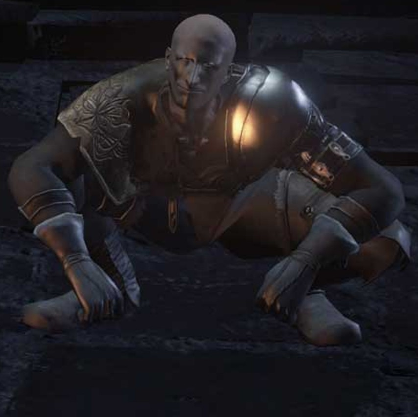
Nerozbitelný Patches (Unbreakable Patches)
Klikni pro rozbor
Běžný (running) vtip Hidetaky Miyazakiho. Plešatý lhář a oportunista Patches se objevuje snad ve
všech "Souls" hrách (dokonce i jako pavouk v Bloodborne). Jeho modus operandi je vždy stejný:
navede vás na poklad, pak vás skopne ze srázu a s úšklebkem začne rabovat vaši mrtvolu. Pokud
pád přežijete, sype si popel na hlavu, vymlouvá se a začne vám prodávat ukradené cetky.
Nicméně v DS3 v DLC The Ringed City, na samém konci času (kde nezbylo nic než popel a dva
poslední lidé na zemi), se z Patchese stává postava se silným emocionálním nábojem. Ztrácí paměť
(pod jménem Lapp) a vydává se najít památník hrdinů, aby si vzpomněl. Když to udělá, vykoná to
poslední, co by od něj hráč čekal – znovu vás zkopne do propasti, ale tentokrát ne z
chamtivosti, ale proto, aby vás s typicky ironickým vzkazem navedl na tajnou, bezpečnou cestu
vpřed, pomohl vám a zpečetil tak svou legendu.
Zbroj rytíře z Katariny (Catarina Armor)
Ikonická cibulovitá zbroj. Patches ji ve hře ukradne rytíři Siegwardovi z
Katariny, zavře ho nahého do studny a zbroj si oblékne, aby hráče obelstil. Jde
o ultimátní důkaz jeho šejdířské povahy.
Zbroj s obrovitým, cibulovitým designem,
proslavená rytíři z Katariny. Nositel této ukradené zbroje se nezdráhal
klesnout na absolutní dno, aby ošidil důvěřivého kolemjdoucího. Ale na konci
časů, nezůstal on nakonec tím posledním příčetným člověkem?
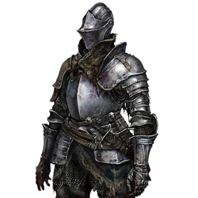
Ten z Popela (Ashen One)
Klikni pro rozbor
Naše hlavní postava. V DS1 jste byli prokletí hrdinové, v DS2 zlomení, zapomětliví hledači
kletby. Ale v DS3 jste doslova odpad. Nepopelavý (Unkindled Ash) je nemrtvý, který byl neshledán
hodným ani toho, aby se stal Pánem popela. Jeho duše byla slabá, v ohni uhořel na prach a po
celá tisíciletí ležel na hřbitově Svatyně (Cemetery of Ash).
Vybrání tohoto "odpadu" pro záchranu světa je projevem absolutního zoufalství a agónie Prvního
plamene. Když mocní bohové i hrdinové opustili své trůny, plamen musel použít zbytkový prach.
Celé poselství vaší postavy ale stojí na naději: i ten nejmenší prach popela dokáže shromáždit
sílu králů a postavit se největším bestiím, a nakonec se rozhodnout, jak celou tuto obrovskou,
tisíciletí trvající lživou šarádu bohů ukončit.
Zkroucený meč (Coiled Sword)
Tento meč nelze klasicky nosit v ruce po většinu hry. Je to onen zakroucený meč
zarostlý do popela a kostí uvnitř každého Ohniště. Na konci hry můžete jeho
zlomek užívat jako nekonečný nástroj pro teleportaci.
Odlitek svinutého meče u ohniště, který
prožhavil popel nespočetných hrdinů. Slouží jako připomínka, že dokonce i
vyhořelý popel lze oživit žhnoucí jiskrou a účel může být nalezen tam, kde
už naděje vyhasla.
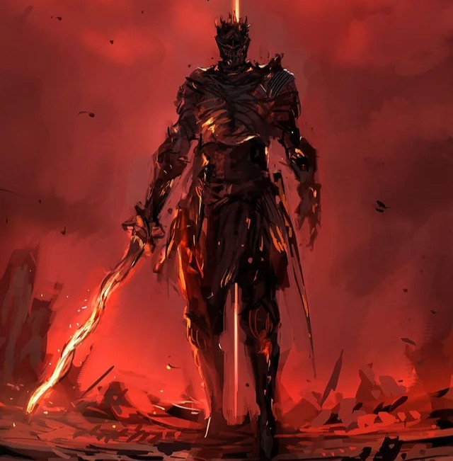
Duše Plamene (Soul of Cinder)
Klikni pro rozbor
Finální boss základní hry. Soul of Cinder není konkrétní postavou (jako Gwyn), ale naprosto
mistrovským amalgámem, agregátem všech duší a jedinců, kteří kdy v minulosti První plamen
zažehli a spojili se s ním (včetně samotných hráčů z prvního a druhého dílu).
Tento ohořelý rytíř střežící pohasínající jiskřičku plamene je zosobněním herní historie. V první
fázi dynamicky mění své formy – útočí jako rytíř s mečem, mág s holemi, hbitý bojovník se
zakřiveným mečem (scimitar) nebo pyromant. Reflektuje tak všechny oblíbené "buildy", které kdy
hráči v sérii vytvořili. Když ho porazíte, nezahyne. Začne hrát smutná piánová hudba z DS1,
narovná se, vytasí masivní velký meč a začne útočit ikonickými blesky samotného Gwyna. Je to
poslední zoufalá obrana Prvního Plamene, manifestující to úplně první (Gwyna) i to poslední
(vás).
Meč Spojení Ohně (Firelink Greatsword)
Zbraň ukovaná z esence samotného Plamene. Má tvar spletených kovových tyčí
kopírující Zkroucený meč, a její speciální útok sešle křížový pruh čirého ohně
přesně jako finální boss.
Velký meč sálající energií samotných Pánů
Popela. V rukou této schránky je zbraň schopna na sebe brát stovky podob,
reflektujíc tak tisíce a miliony mrtvých, kteří kdysi prolili krev ve víře v
nekonečnost Ohně.
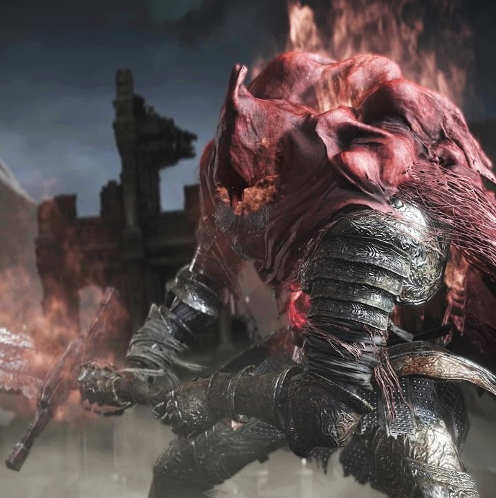
Gael, Otrocký Rytíř
Klikni pro rozbor
Závěrečný boss úplně posledního DLC a skutečný a definitivní závěr celé série Dark Souls. Slave
Knight Gael není bůh, král ani lord. Je to ten nejposlednější, nejstarší a nejobyčejnější pěšák.
Válečný otrok z Věku Bohů, posílaný do nejhorších válek a nucený umírat a vstávat z mrtvých po
celou existenci světa.
Jeho úkolem bylo najít pro malířku temný pigment z krve Temné Duše (Dark Soul), ze které by mohla
namalovat nový, chladný a klidný svět. Gael cestoval až na samotný konec času a prostoru.
Zjistil ale, že krev trpasličích králů v The Ringed City už dávno vyschla. V zoufalství se
obětoval, všechny trpaslíky sežral, aby nechal Temnou duši rozhořet ve své vlastní krevní
oběhové soustavě. Sám tím ale zmutoval, narostl do gigantických rozměrů a po stovkách let čekání
ztratil rozum.
Závěrečný souboj se odehrává v pustině tvořené prachem ze zničených galaxií. Dvě
nejbezvýznamnější bytosti, prach s prachem – Gael (Otrok) a Vy (Nepopelavý) – bojují o absolutně
Všechno: o krev Temné Duše. Když Gaela zabijete, odnesete jeho krev malé holčičce a ta konečně
vytvoří plátno pro nový svět.
Gaelův Velký meč (Gael's Greatsword)
Tento oškubaný, rozlámaný a krví zalitý popravčí meč sloužil Gaelovi po celou
věčnost, nepoznamenán ničím jiným, než neustálým štípáním a zabíjením po
miliontém znovuzrození.
Velký meč popravčího užívaný otrokem Gaelem.
Na počátku se jevil jako těžkopádná zbraň k vykonávání poprav, ale staletí
bojů a čepel obalená sraženou černou krví jej přetavily do zbraně plné
syrové, děsivé zvířeckosti.
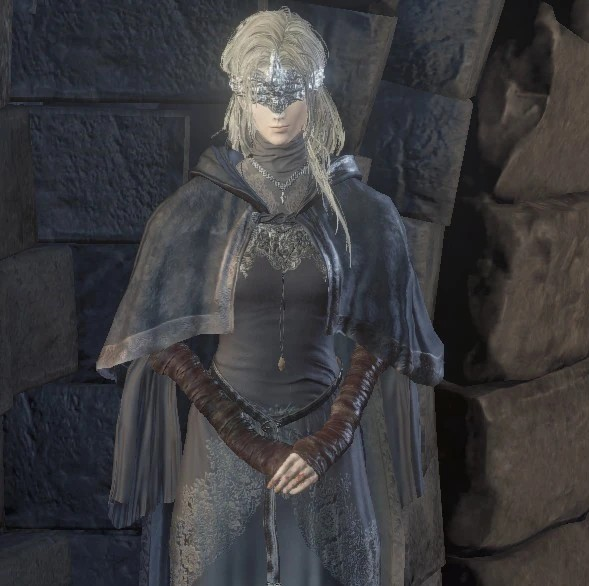
Strážkyně ohně
Klikni pro rozbor
Ztělesnění absolutní oddanosti a obětování. Strážkyně ohně ve Svatyni Spojení Ohně existuje pouze
proto, aby sloužila Nepopelavému a přeměňovala nasbírané duše v jeho sílu. Aby nemohly vidět
zkaženost světa a pokušení Temnoty, jsou všechny Strážkyně při převzetí svého úřadu rituálně
oslepeny a nosí přes oči zdobenou masku či korunu.
Vztah hráče a Strážkyně tvoří emocionální jádro hry. Zpočátku je to jen poslušná loutka systému
vytvořeného bohy. Pokud jí ale hráč v průběhu hry přinese zakázané Oči, které najde v Opuštěných
hrobech, získá schopnost vidět. Spatří svět, ve kterém plamen vyhasne. I když ji to k smrti
vyděsí a považuje to za největší zradu svého údělu, slíbí vám věrnost. Pokud se na konci
rozhodnete nechat Oheň vyhasnout, bude to právě ona, kdo jej vezme do dlaní, nechá ho zhasnout a
v naprosté tmě se vás zeptá: "Slyšíš můj hlas, Nepopelavý?"
Duše Strážkyně ohně (Fire Keeper Soul)
Hráč tento temný, zjizvený pozůstatek najde na vrcholku věže nad Svatyní, mezi
hromadou mrtvol předchozích Strážkyň. Předání této duše vaší živé Strážkyni jí
umožní vyléčit vaši Temnou pečeť (Dark Sigil).
Duše Strážkyně ohně, která se navrátila ze
Zpropadené propasti. Její nitro se hemží lidskostí. Říká se, že Strážkyně
ohně jsou schránkami pro miliony duší, a tato temná přitažlivost z nich činí
cíl těch nejhorších možných kleteb.